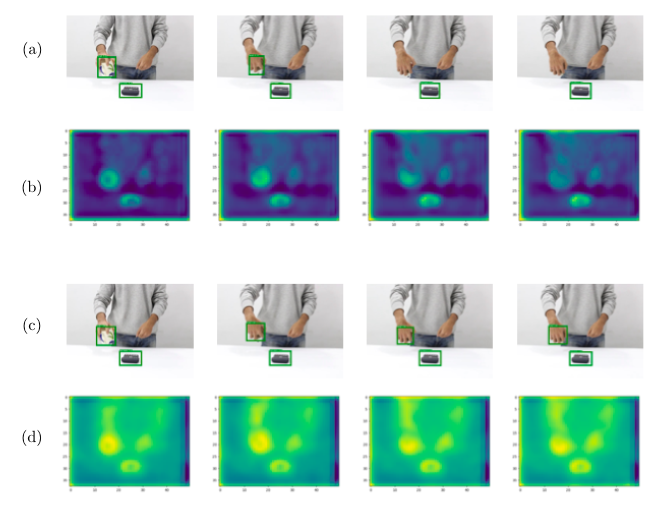
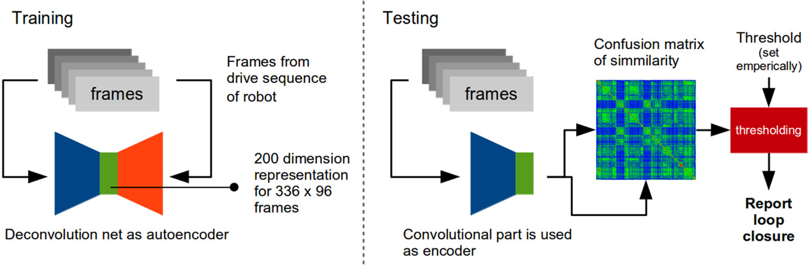
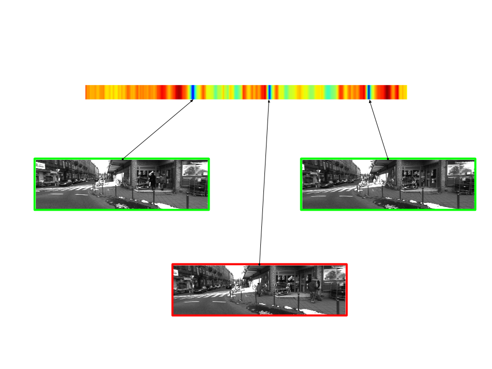
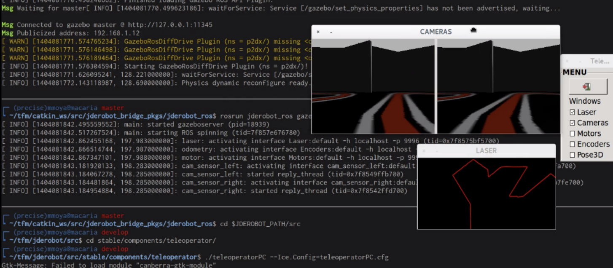
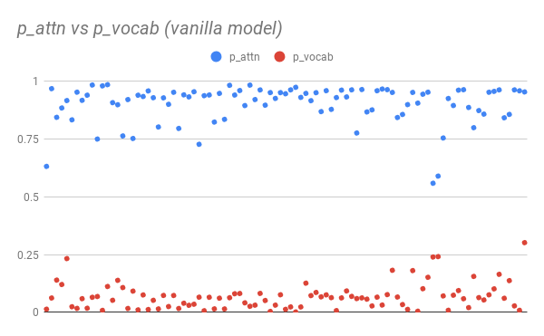
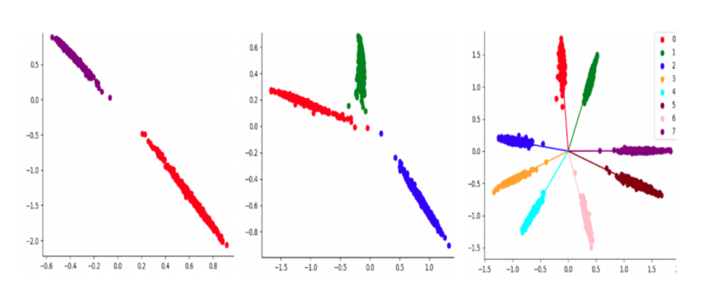
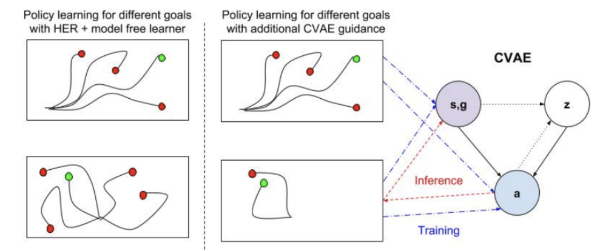
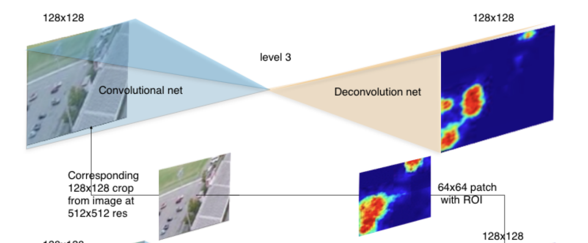

Industry Experience
Character.AI (2024 - present): Driving efforts in reinforcement learning and large language models. I am the architect of Character.AI’s Alignment flywheel (data laser) and work closely with our research advisors to make our models more fun and engaging.
Cruise AI (2022 - 2024): As a Senior Applied Scientist / Team Lead in the foundations workstream, I developed end-to-end models by leveraging multimodal transformer architectures, enhancing the onboard stack’s robustness to long-tail issues.
AWS AI (2019 - 2022): Worked as an Applied Scientist in the research team focusing on self-supervised learning, few-shot learning, and domain adaptation for large-scale computer vision challenges.
Publications

Learning to Track Object Position through Occlusion
[New]
Satyaki Chakraborty, Martial Hebert
CVPR, 2020 workshop
pdf abstract
Camera ready version coming post April 10, 2020.
Being able to detect or track an object of interest through occlusion has been a long standing challenge for different autonomous tasks. Traditional methods that employ visual object trackers with explicit occlusion modeling experience drift and make several fundamental assumptions about the data. We propose to address this with a `tracking-by-detection` approach that builds upon the success of region based video object detectors. Our video level object detector uses a novel recurrent computational unit at its core that enables long term propagation of object features even under occlusion.

Detection of loop closure in SLAM: A DeconvNet based approach
Aritra Mukherjee*, Satyaki Chakraborty*, Sanjoy K. Saha
Journal of Applied Soft Computing, 2017, 80 650-656
pdf abstract
The problem of Simultaneous Localization and Mapping(SLAM) suffers from drift in long run odometry and the only way to correct that is by graph optimization based on loop closure detection, where a robot is able to correct its location precisely if it detects that it is at a place which was visited before. The traditional approaches for recognizing known places follow a feature-based bag-of-words model which discards certain geometric and structural information. The proposed methodology represents a scene as low-dimensional vector using a deep deconvolution network. A 12-layer deconvolution net has been proposed that encodes and decodes an image to itself to learn the representation. The use of locally connected autoencoders in the network drastically reduces the dimension without significant loss in retaining the contextual information. Loop closure is identified by comparing such representations. Sequences from KITTI visual odometry dataset and new college dataset are used for evaluation. Performance is compared with state-of-the-art techniques and found satisfactory.

Learning deep representations for Place Recognition in SLAM
[best student paper]
Aritra Mukherjee*, Satyaki Chakraborty*, Sanjoy K. Saha
7th International Conference on Pattern Recognition and Machine Intelligence 2016
pdf abstract
Traditional approaches for recognising known places follow a feature-based bag-of-words model while discarding certain geometric and structural information. In order to improve real-time query performance, we take a slightly different approach by learning low-dimensional global representation vectors using a deconvolution net. Proposed 12-layer deconvolution net encodes and decodes an image to itself and in the process learns a representation of the image in a reduced feature space, it is then used for comparing one image with another to identify loop closures.

Making compatible two robotic middlewares: ROS and JdeRobot
Satyaki Chakraborty, JoseMaria C. Plaza
Proceedings of the XVII Workshop on Physical Agents (WAF-2016)
pdf abstract
In contrast with other fields, robotic
software has its own requirements like real time and robustness.
In the last years several middlewares have appeared in the
robotics community that make easier the creation of robotiWAF16c
applications and improve their reusability. Maybe ROS (Robot
Operating System) is the most widespread one, with a wide user
and developer community. This paper presents the work towards
making compatible two of them, JdeRobot and ROS, both component oriented. A compatibility library has been developed that
allows JdeRobot components to directly interoperate with ROS
drivers, exchanging ROS messages with them. Two experiments
are presented that experimentally validate the approach
Research projects / Tech reports

Improving abstraction in Pointer Generator summaries, 2019
Satyaki Chakraborty, Xinya Li, Sayak Chakraborty
pdf abstract
Pointer-generator network is an extremely popular method of text summarization. More recent works in this domain still build on top of the baseline pointer generator by augmenting a content selection phase, or by decomposing the decoder into a contextual network and a language model. However, all such models that are based on the pointer-generator base architecture cannot generate novel words in the summary and mostly copy words from the source text. In our work, we first thoroughly investigate why the pointer-generator network is unable to generate novel words, and then address that by adding an Out-of-vocabulary (OOV) penalty. This enables us to improve the amount of novelty/abstraction significantly. We use normalized n-gram novelty scores as a metric for determining the level of abstraction. Moreover, we also report rouge scores of our model since most summarization models are evaluated with R-1, R-2, R-L scores.

Eliminating intra-class variance in classification networks with Adversarial Losses, 2019
Siva Chaitanya Mynepalli, Satyaki Chakraborty, Rishi Madhok
pdf abstract
The established procedure to train classification neural networks has been to employ a softmax layer to classify an embedding into given number of classes. The softmax function approximates boundaries between classes as angular bisectors in N-dimensional space. Therefore, there is huge variance in the embeddings of a given class. It is neces- sary to eliminate this intra-class variation to confidently identify out-of- distribution samples while employing a classification network in the real world. Additionally, eliminating intra-class variance might lead to perfor- mance gains in face recognition algorithms, as has been observed previ- ously. In this project, we would explore novel ways of reducing intra-class variance. Particularly, we propose to employ an adversarial network to penalize intra-class variance thereby eliminating variation in the original classification network.

Multigoal reinforcement learning with conditional variational auto-encoders, 2018
Maximilian Sieb, Hariank Muthakana, Satyaki Chakraborty
pdf abstract
Multi-goal and multi-task reinforcement learning are interesting topics that have gotten a lot of attention lately. Given an environment and a goal, how do we transfer knowledge and policies to another goal or another task? In this work, we investigate multi-goal/multi-task learning using variational autoencoders (VAEs). We work in the MuJoCo environment, which has high-dimensional state-space representation as well as complex goals and tasks.

Small object detection with heirarchical deconvolution nets, 2016
Satyaki Chakraborty, Daniel Maturana, Sebastian Scherer
pdf abstract
Detecting cars in large aerial photographs can be quite a challenging task, given that cars in such datasets are often barely visible to the naked human eye. Traditional object detection algorithms fail to perform well when it comes to detecting cars under such circumstances. One would rather use context or exploit spatial relationship between different entities in the scene to narrow down the search space. We aim to do so by looking at different resolutions of the image to process context and focus on promising areas. This is done using a hierarchy of deconvolution networks with each level of the hierarchy trying to predict a heatmap of a certain resolution. We show that our architecture is able to model context implicitly and use it for finer prediction and faster search.
Achievements
- Received NSF scholarship grant (2017) covering full tuition support and stipend during master's program.
- One of 30 recipients of the S N Bose scholarship (2016) out of a pool of 1000+ applicants. The scholarship is awarded by the Indo-US Science and Technology Forum (IUSSTF) to select exchange visitors each year.
- Merit rank secured 06 out of 10 million odd students who took 10th Standard WBBSE examination 2011. Recipient of State Governor award for academic excellence.